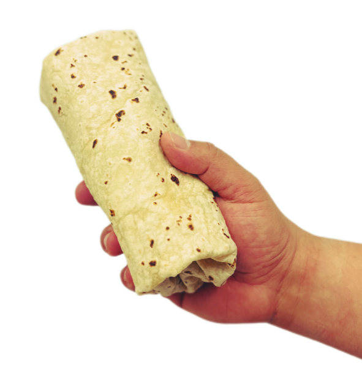

Burritos
Home

Ingredients
- 1 bag Tortillas
- 1 tb Vegetable Oil
- 1 bag Vegan Chicken Nuggets
- 1 Red Bell Pepper (sliced)
- 1 Yellow Bell Pepper (sliced)
- 3 Avocados
- 1 Lime (halved)
- 2 cans Vegetarian Refried Beans
- 1 bottle Salsa/Sauce of your Choice
- 1 container Vegan Sour Cream
- Lettuce (shredded)
- 2 tb Cumin
- 2 tb Paprika
- 1 tb Cayenne
- Salt (to taste)
- Pepper (to taste)
- Garlic Powder (to taste)
Steps
- Turn oven on as per vegan chicken nugget bag instructions,
lay 2 nuggets out onto baking sheet for each burrito you plan to make.
- Heat refried beans on low heat in pot on stovetop.
- Sautee sliced bell peppers on medium low heat in oil in pan on other stove top burner.
- Once brightly colored, add cumin, paprika, and cayenne, mix for a moment, then squeeze juice from half of the lime into pan.
- Use the other half of the lime, the avocados, the salt, pepper, and garlic powder to make guacamole to taste.
- Once finished, remove beans, chicken nuggets, and peppers from heat
- Assemble burrito with sour cream, salsa, lettuce, and cooked fillings.